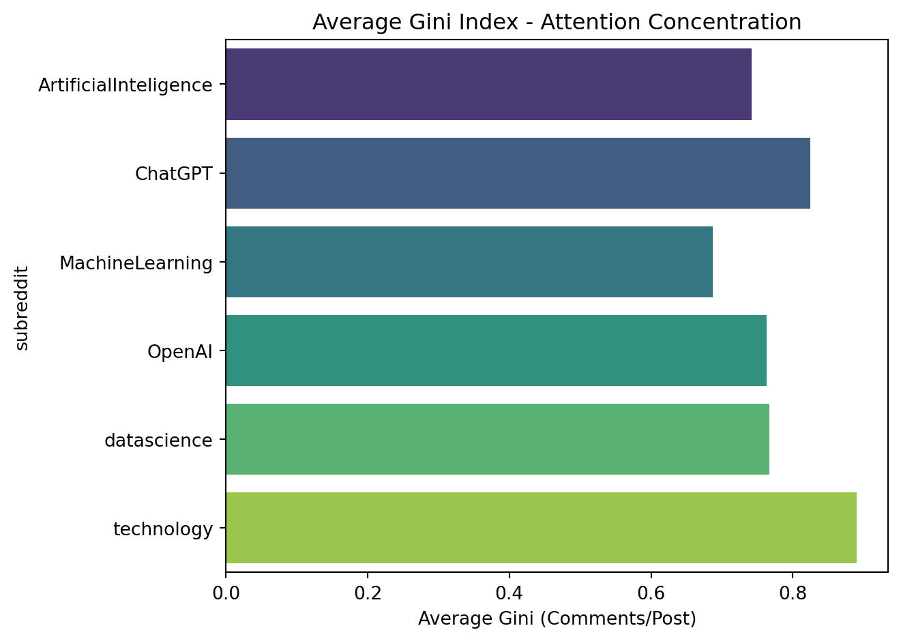

| data_type | total_rows | size_gb | date_range_start | date_range_end | |
|---|---|---|---|---|---|
| 0 | comments | 12561291 | 12.56 | 2023-06-01 | 2024-07-31 |
| 1 | submissions | 831021 | 0.83 | 2023-06-01 | 2024-07-31 |
Exploratory Data Analysis
This study examines activity dynamics, user engagement, attention concentration, and cross-community interactions across major AI and technology subreddits from June 2023 to July 2024. Through large-scale data processing with Spark and Python, we explore how community participation evolves over time, which subreddits retain returning users most effectively, how discussion attention is distributed across posts, and whether AI/tech communities share overlapping user bases. These analyses provide a foundational understanding of behavioral patterns within the broader Reddit AI ecosystem.
Data Overview
Dataset Summary
This project analyzes a large-scale Reddit dataset covering user activity from June 2023 to July 2024 across 46 unique subreddits. The dataset captures both submissions and comments, enabling a comprehensive examination of engagement patterns, topic trends, and community dynamics over time. The two charts below illustrate the relevant content.
Time range: 2023-06 – 2024-07
Total Comments:
The dataset contains a total of 12,561,291 comments collected from Reddit between June 2023 and July 2024. This large volume of user-generated content enables detailed temporal, thematic, and engagement-focused analyses.Total Submissions:
In addition to comments, the dataset includes 831,021 submissions, representing the initial posts that anchor each discussion thread. These submissions provide essential context for understanding topic initiation patterns and community-level activity.Total Subreddits:
The dataset spans 46 distinct subreddits, covering a diverse range of themes including technology, artificial intelligence, science, careers, and future-oriented discussions. This breadth allows for comparative analysis across communities with different interests and engagement behaviors.Top Subreddits by Total Activity
Activity is measured bytotal_rows = num_comments + num_submissions. The most active subreddits in the dataset are:- technology — 3,265,248 total rows
- ChatGPT — 1,894,755 total rows
- science — 1,051,336 total rows
- cscareerquestions — 974,990 total rows
- Futurology — 914,347 total rows
These subreddits account for a significant share of the dataset’s total activity, reflecting strong user engagement in discussions related to emerging technologies, AI tools, scientific topics, and career development.
- technology — 3,265,248 total rows
| subreddit | num_comments | avg_comment_score | num_submissions | avg_submission_score | total_rows | |
|---|---|---|---|---|---|---|
| 44 | technology | 3210257 | 11.109351 | 54991 | 337.551036 | 3265248 |
| 4 | ChatGPT | 1748893 | 6.564207 | 145862 | 51.257984 | 1894755 |
| 40 | science | 1028744 | 9.878945 | 22592 | 354.457596 | 1051336 |
| 28 | cscareerquestions | 910865 | 5.916743 | 64125 | 12.182316 | 974990 |
| 12 | Futurology | 898463 | 6.395128 | 15884 | 176.512465 | 914347 |
| 9 | Entrepreneur | 755790 | 2.477290 | 86534 | 4.859373 | 842324 |
| 45 | webdev | 516710 | 4.481493 | 57369 | 8.473967 | 574079 |
| 35 | learnprogramming | 452260 | 3.041514 | 50429 | 5.591862 | 502689 |
| 19 | OpenAI | 337768 | 4.450842 | 25574 | 24.268476 | 363342 |
| 38 | programming | 325140 | 8.167888 | 31396 | 20.063256 | 356536 |
| 32 | gadgets | 331981 | 8.062708 | 6434 | 254.383898 | 338415 |
| 36 | learnpython | 208024 | 2.108420 | 30948 | 2.720628 | 238972 |
| 8 | ElectricalEngineering | 214790 | 4.132976 | 22407 | 8.276208 | 237197 |
| 43 | technews | 222603 | 5.017843 | 9896 | 147.518795 | 232499 |
| 2 | ArtificialInteligence | 193665 | 2.013590 | 27614 | 3.891903 | 221279 |
| 29 | datascience | 193664 | 4.106711 | 24717 | 6.360278 | 218381 |
| 16 | MachineLearning | 146901 | 3.897986 | 37191 | 4.729182 | 184092 |
| 20 | Physics | 166907 | 5.138023 | 16552 | 11.204265 | 183459 |
| 18 | MechanicalEngineering | 142210 | 4.528043 | 10692 | 8.584175 | 152902 |
| 3 | Astronomy | 114814 | 5.744718 | 13305 | 41.608794 | 128119 |
| 21 | Python | 100149 | 3.893229 | 18323 | 6.637396 | 118472 |
| 42 | tech | 78069 | 4.071629 | 6321 | 109.124347 | 84390 |
| 37 | physicsmemes | 62492 | 13.372304 | 3764 | 242.282147 | 66256 |
| 39 | robotics | 44127 | 2.407347 | 7575 | 9.391551 | 51702 |
| 27 | computerscience | 31181 | 3.723197 | 7504 | 3.898188 | 38685 |
| 30 | deeplearning | 29739 | 1.890346 | 5534 | 3.626671 | 35273 |
| 34 | learnjava | 23050 | 1.671584 | 3392 | 2.901238 | 26442 |
| 5 | ComputerEngineering | 14360 | 2.661490 | 2563 | 4.098712 | 16923 |
| 23 | QuantumPhysics | 11850 | 1.812911 | 1668 | 3.244005 | 13518 |
| 22 | QuantumComputing | 11155 | 1.864186 | 1786 | 4.209966 | 12941 |
| 15 | MLQuestions | 7726 | 1.470230 | 3094 | 1.648675 | 10820 |
| 41 | spaceflight | 8408 | 2.907112 | 1707 | 12.414177 | 10115 |
| 26 | coding | 5564 | 2.204889 | 4081 | 2.046557 | 9645 |
| 11 | Futurism | 7000 | 1.429000 | 1042 | 8.631478 | 8042 |
| 13 | Innovation | 392 | 1.168367 | 4995 | 1.061061 | 5387 |
| 17 | MaterialsScience | 2075 | 1.902169 | 589 | 2.558574 | 2664 |
| 25 | bigdata | 864 | 1.261574 | 1255 | 1.521116 | 2119 |
| 0 | AI_Agents | 1270 | 1.277165 | 594 | 2.028620 | 1864 |
| 7 | EarthScience | 829 | 1.917973 | 351 | 2.934473 | 1180 |
| 14 | LLM | 349 | 1.137536 | 89 | 0.561798 | 438 |
| 33 | genai | 90 | 1.044444 | 182 | 1.730769 | 272 |
| 6 | DataScienceMemes | 44 | 1.068182 | 86 | 3.127907 | 130 |
| 1 | AIethics | 45 | 1.044444 | 7 | 0.857143 | 52 |
| 10 | EnvironmentalScience | 11 | 1.000000 | 0 | 0.000000 | 11 |
| 31 | futurescience | 0 | 0.000000 | 7 | 1.000000 | 7 |
| 24 | TechEntrepreneur | 3 | 1.000000 | 0 | 0.000000 | 3 |
RQ1: How has community activity evolved across AI and technology subreddits over time?
Business Question:
How have monthly post and comment volumes changed across major AI and technology subreddits? Do any noticeable surges correspond to major AI or technology events?
Analysis Approach:
- Use Spark to aggregate posts and comments by subreddit and month
- Visualize monthly activity trends to compare engagement patterns and identify periods of rapid growth or decline

Findings:
- technology consistently dominates overall activity, peaking above 300,000 monthly interactions in mid-2023 and again in mid-2024, reflecting its broad and sustained user interest.
- ChatGPT shows several pronounced surges—particularly around late 2023 and early 2024—likely corresponding to major AI announcements and product updates.
- Futurology exhibits a steady upward trend throughout the year, suggesting growing interest in future-oriented and AI-related discussions.
- OpenAI experiences sharp but short-lived spikes (e.g., late 2023 and mid-2024), consistent with event-driven engagement tied to major releases or public statements.
- Smaller communities such as MachineLearning, technews, and ArtificialInteligence remain relatively stable, showing modest fluctuations but no large-scale surges.
Overall, activity patterns indicate that major AI/tech events tend to drive short-term spikes in engagement, while broader technology interest maintains high baseline levels throughout the entire period.
RQ3: How concentrated is attention within AI and tech discussions?
Business Question:
To what extent are conversations driven by a small number of highly viral posts, versus being distributed more evenly across many posts? In other words, do certain subreddits exhibit stronger attention inequality than others?
Analysis Approach:
- Use Spark to compute the Gini coefficient of comments per post for each subreddit, where higher Gini values indicate more concentrated attention.
- Visualize distribution patterns using violin plots to show variability across months and bar charts to compare average attention concentration between subreddits.


Findings:
Technology and ChatGPT exhibit the strongest concentration of attention, with average Gini values approaching 0.88–0.90.
This indicates that engagement in these subreddits is dominated by a handful of highly viral posts. When major announcements, controversies, or breakthrough AI tools emerge, these communities often experience rapid surges in attention focused on a small number of trending threads. As a result, the distribution of comments becomes heavily skewed: most posts receive modest engagement while a small set of “blockbuster” discussions absorb the majority of user activity. Such dynamics are typical of large, heterogeneous audiences that respond quickly to broad-interest or news-driven content.Professional and technical communities—including MachineLearning and datascience—show significantly lower attention inequality (Gini ≈ 0.70–0.78).
These subreddits display a more evenly distributed engagement pattern, where comments accumulate across a wider range of posts rather than concentrating around a few viral threads. This suggests that discussions are more specialized, sustained, and topic-focused, attracting recurring contributions from users who are participating for informational or expert-driven purposes rather than reacting to viral events. The lower Gini values imply that these communities support richer, multi-thread parallel discussions typical of technical forums.OpenAI occupies a middle ground, with moderate concentration levels (~0.75–0.80) but higher variability across months.
This pattern reflects the community’s sensitivity to event-driven cycles: during major OpenAI releases or controversies, a few posts dominate the discourse, while in quieter periods, engagement becomes more evenly distributed.Overall, the Gini-based comparisons highlight a structural divide between general-interest and expert-focused AI communities.
Large, news-oriented subreddits tend to exhibit “winner-take-most” behavior, where viral content disproportionately shapes the conversation. In contrast, subreddits centered on technical learning, research, or professional practice support more equitable attention patterns, indicating a healthier distribution of dialogue across diverse posts. These findings reveal how audience composition, content type, and topic breadth jointly influence the way discussions unfold within online AI and technology communities.
Key Takeaways
- Community activity is highly event-driven, with major AI/tech announcements producing clear surges in monthly posts and comments. Among all communities, the technology subreddit consistently maintains the highest baseline activity, highlighting its broad relevance and responsiveness to industry-wide events.
- User retention patterns differ sharply across subreddit types. Specialized communities (e.g., science, robotics) show intermittent but intense periods of returning-user engagement, whereas larger mainstream AI communities such as ChatGPT and technology exhibit more stable, steady retention, indicating continuous community participation.
- Attention concentration varies with community purpose. General tech forums display high Gini coefficients (≈0.9), suggesting a “viral hit” structure where a few posts dominate engagement. In contrast, technical and research-focused subreddits (e.g., MachineLearning) distribute attention more evenly (Gini ≈0.7), supporting sustained, multi-threaded discussions rather than viral dynamics.
- Cross-community user overlap is minimal, showing that AI and technology subreddits maintain largely distinct audience groups. Even closely related AI subreddits share limited user participation, indicating strong topical specialization rather than fluid cross-community engagement.